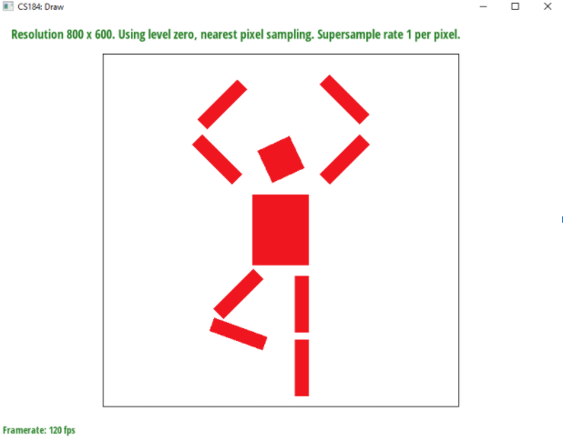
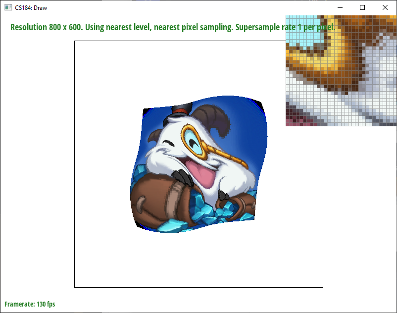
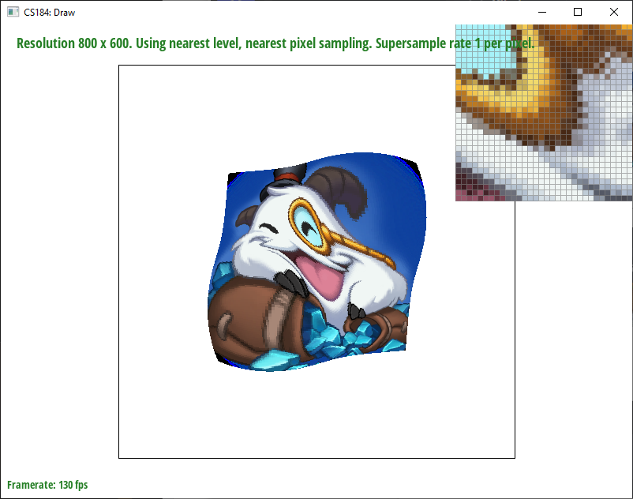

Overview
In this project, I’ve implemented the first part of the rasterization pipeline; from rasterizing objects via sampling to mapping textures onto those objects. Through each task, I implement new optimizations and features of the pipeline providing some visual clarity along the way. Forms of antialiasing, transforming shapes, sampling textures, and colors; all of it was put in somewhere along the line in order to make the final picture look as clear as possible.
Task 1
Rasterizing triangles requires sampling pixels to find out whether the centers were in the triangle or not. If so we color it with the given color. I check via the three-line test, where each line can be seen as bisecting a plane. We know the third point is in the plane so if we multiply the sign of the third point (in the formula) by the individual result for the point we get a test for both the clockwise and counterclockwise traversal of the triangle. My algorithm checks exactly the bounding box of the triangle so its not worse than it, by using the max x and min x, max y and min y of all the points we get a bounding box and iterate over that box rather than the whole screen. The following screenshot shows aliasing occurring at the end of the triangle because the resolution of the image used is higher than the resolution of the rasterization window.
Task 2
For supersampling, I used an algorithm that extended the sample buffer to be sample_rate * width * height, in essence dividing each pixel into sample_rate pixels. Then for each pixel in the new resolution, I sampled the image. After all pixels were sampled I averaged each subpixel in the original resolution together and placed that averaged color pixel into the rgb framebuffer. This was extremely useful as a form of antialiasing, creating smooth edges where there were originally jaggies. The only modification made to the original pipeline was extra sampling which created this form of preprocessing the image to phase out some of the high frequencies, which in turn created smoother edged since now where there were hard color boundaries there's a gradient from one color to the next. This expanded the samplebuffer and made a new pattern of indexing into that buffer in order to read and write values for subpixels.
The pink triangle originally has a gap between the tip and the body which occurs because we sample at too low of a frequency for the original image which results in this hard edge. When we increase the sampling rate and average back down it gives these faded pinks so it can fit the original resolution while staying more true to the original image.
Task 3
I was trying to make him do a pirouette.

Task 4
Barycentric coordinates aim to describe a coordinate in proportion to other coordinates.Take the circle below:
Now lets put a color on each vertex of a triangle:
(from CS184 Lecture 5 slides:https://cs184.eecs.berkeley.edu/sp22/lecture/5-18/texture-mapping)
We measure the proportional distance between any point of the points A, B, C to V = (x,y) (technically its a vertex to the opposite side via the perpendicular line through that line. The distance between the opposite line and the perpendicular to the other perpendicular interesting line through the point V), and then multiply the color value by that proportion and add them all together to get an averaged color. This gives us a gradient as the closer you are to a point the more heavily that color will be weighted in the average. These proportion sum to 1 thus we can always get a valid color. The closer we get to the middle of the triangle the more equally the three proportions are ( coords = (⅓, ⅓,⅓,) ) and the closer we get to any point the more that color will be saturated and at each point the color will be only itself (coords = 1, 0,0 if alpha is first).
Task 5
Pixel sampling is a method that takes some pixel in a domain and maps it onto an area in a different domain. For the method of texture mapping I took the u,v values of the vertices of the triangle and for any given pixel calculated the barycentric coordinates and then multiplied those same scalars (the ones denoted alpha, beta, gamma) and multiplied the (u,v) vectors of the vertices in order to get a barycentric coordinate (u,v) for the given point. After resizing the vector in the texture.cpp file, I used the value in order to get the nearest and bilinear samples and put them into the sample buffers. Nearest only required taking the closest color to the given point in texture and put it into the buffer. For bilinear, we do 3 linear interpolations in order to get an averaged color to put into our buffer. Pictures below:
 For this file it's clearest that the biggest difference between the two pixel sampling methods is when the sampling frequency is much smaller than the true frequency for the image. When we sample a small number of pixels instead of averaging out the value the difference is clear when you have 100s of texels inside of one sample pixel. Bilinear creates a smooth average that transitions between the colors on the texture which practically blurs the image. At higher sampling rates the difference between the two is almost unnoticeable and the higher the sampling rate the less noticeable it will be until you pass a certain threshold at which point the difference becomes larger again.
Task 6
Level sampling is a method of choosing which mipmap level to use at different pixels. As for the implementation, I took the same approach as task 5 but added 2 more vectors (x+1, y) and (x, y+1) and converted those to the barycentric coordinates as well. Using a structure, I passed the values into a function to decide what method to do. If it was Zero, it just always did the sampling at level zero; if it was nearest or linear it called get_level in order to calculate the level at which it needed to be sampled and then called the respective sampling functions, sample nearest, or bilinear in order to get the correct color. If it was bilinear level sampling it took the float from get_level and floored it and then called the sampling function and then called the sampling function on level + 1. It then did a linear interpolation based on the original D value and the two colors it received from the sample functions. If it was nearest level sampling it just rounded D and called the respective sample function and returned the output color. The fastest and worst quality is taking a single level for all pixels, using the lowest sampling rate, and using nearest pixel sampling which has a lot of aliasing but little memory usage. As you increase the sampling rate you increase the sample buffer which requires more storage for samples and more time to compute each subpixel but increases antialiasing. Changing from a single level, to nearest, to bilinear increases the number of operations done which increases the amount of time, storage is pretty much the same, only an extra variable or two with a low number of bytes but the antialiasing power increases pretty dramatically. Changing the sample method from nearest to bilinear increases time taken and antialiasing power but memory requirements stay fairly similar.

For this file it's clearest that the biggest difference between the two pixel sampling methods is when the sampling frequency is much smaller than the true frequency for the image. When we sample a small number of pixels instead of averaging out the value the difference is clear when you have 100s of texels inside of one sample pixel. Bilinear creates a smooth average that transitions between the colors on the texture which practically blurs the image. At higher sampling rates the difference between the two is almost unnoticeable and the higher the sampling rate the less noticeable it will be until you pass a certain threshold at which point the difference becomes larger again.
Task 6
Level sampling is a method of choosing which mipmap level to use at different pixels. As for the implementation, I took the same approach as task 5 but added 2 more vectors (x+1, y) and (x, y+1) and converted those to the barycentric coordinates as well. Using a structure, I passed the values into a function to decide what method to do. If it was Zero, it just always did the sampling at level zero; if it was nearest or linear it called get_level in order to calculate the level at which it needed to be sampled and then called the respective sampling functions, sample nearest, or bilinear in order to get the correct color. If it was bilinear level sampling it took the float from get_level and floored it and then called the sampling function and then called the sampling function on level + 1. It then did a linear interpolation based on the original D value and the two colors it received from the sample functions. If it was nearest level sampling it just rounded D and called the respective sample function and returned the output color. The fastest and worst quality is taking a single level for all pixels, using the lowest sampling rate, and using nearest pixel sampling which has a lot of aliasing but little memory usage. As you increase the sampling rate you increase the sample buffer which requires more storage for samples and more time to compute each subpixel but increases antialiasing. Changing from a single level, to nearest, to bilinear increases the number of operations done which increases the amount of time, storage is pretty much the same, only an extra variable or two with a low number of bytes but the antialiasing power increases pretty dramatically. Changing the sample method from nearest to bilinear increases time taken and antialiasing power but memory requirements stay fairly similar.
